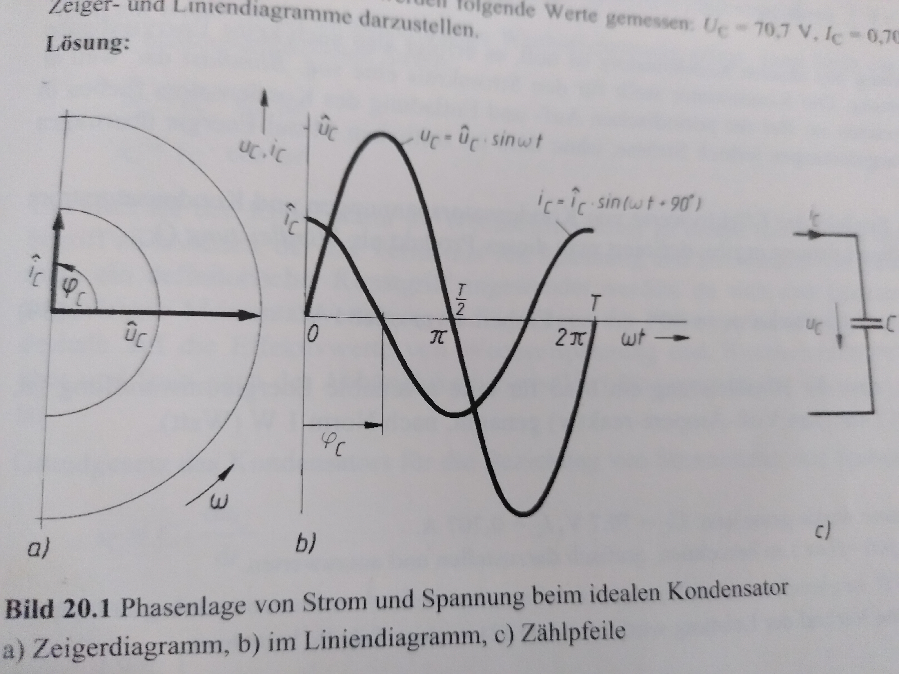
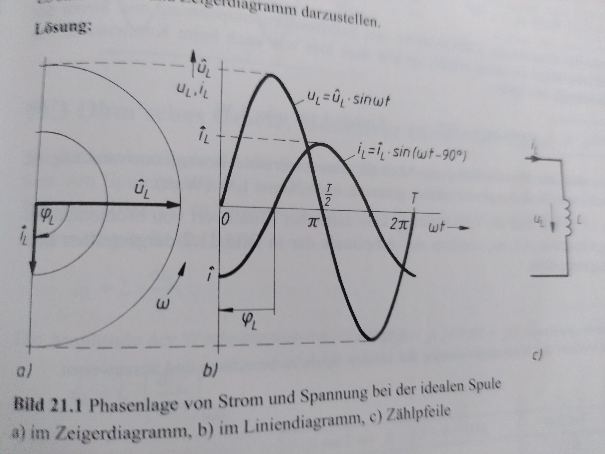
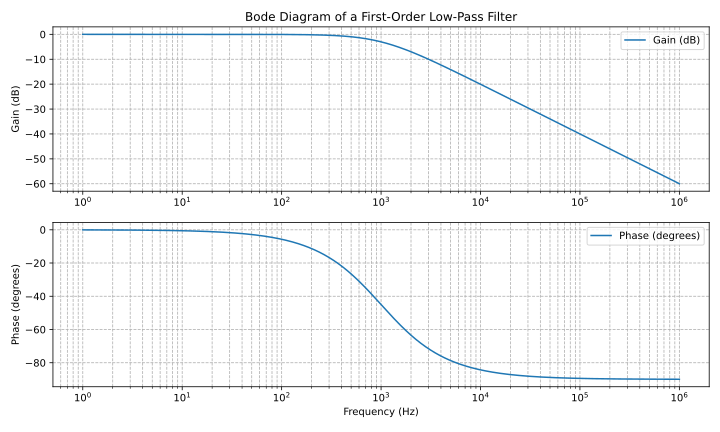
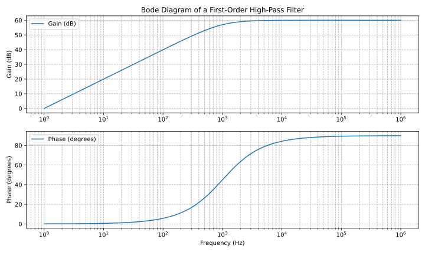

Time-sensitive components
After reviewing and extensively describing the most important component, the resistor, in the first part, now we want to have a look at the next important component, the capacitor. Capacitor are also passive components, meaning they do not amplify a signal.
Electrostatic field
If we take two metal planes and park them side by side, with a small thin layer of a non-conducting substance in-between, we created an electrostatic field.
The build-up of the electrostatic field happens via a DC source, in the image below depicted by the generator G. The source voltage of the generator shifts th electrons located in the wire and the metal plates. This way on the right plate originates an overflowm of electrons (-Q) , while on the other plate a ahortage of the same amount, +Q, originates.
For a short amount of time, a charging current flows with the instantaneous value i, which in tradtional direction, promotes a quantity of electricity +Q. The charging current i becomes zero, if the quantity of electricity +Q and -Q generated voltage equals out.
The electrostatic field endures after detachment from the DC source, which can be verified with a high impedance voltmeter.The conclusion: The electrostatic field originates by the separated loads +Q, -Q. THe existing voltage shows, that energy is stored in the field. This arrangement is called a plate capacitor.
Reference: Dieter Zastrow, Elektrotechnik,16.Auflage, p. 120. It is another basic electronic component, oftentimes used in electronic devices. The substance in-between is called a dielectricum.
Capacitance
The basic equation for computing the capacity, the no.-1 property of a condensator is a follows. The capacity C of the capacitor gives the interesting ratio of the stored charge quantity Q to the charging voltage U_c .
\[C= \frac{Q}{U_c}\]
Parallel- and series circuit
In parallel connection of capacitors, the capacitances add up to the total capacitance.
\[C= C_{1} + C_{2} + … \]
In series connection, the reciprocal of the total capacitance is equal to the sum of the reciprocals of the individual capacitances.
\[ \frac{1}{C}= \frac{1}{C_{1}} + \frac{1}{C_{2}} + … \]
The Capacitor and Coils
The elements next introduced, have a clue compared to the static of (ohmic) resistor. Now the time comes into focus, too, since capacitator and coils are both in a sense time-sensitive elements. So normally we would start with introducing the Capacitor with all its implication, and then go over to the coils wich are introduced then afterwards. Instead for this post, we show both of them in a comparision as they have complementary properties.
conductor |
coil |
|
|
circuit symbol of a capacitor |
circuit symbol of a coil |
 |
 |
stores energy in electrical field |
stores energy in a magnetic field |
leads in phase |
lags in phase |
blocks in DC Mode |
in DC mode current is growing while, voltage is taken done, with the same rate |
Frequency-dependent networks (Filters)
An often and very popular application of capacitors are filters, Simple filters of first order like shown here,are build up from one resistor and one capacitor. Next we want to compute the frequency response of a filter by getting the frequency response function, which is the outgoing voltage divided by the in-going voltage - this becomes clearer with the following examples.
Lowpass Filter
1.order lowpass
frequency response
\[ H(\omega) = \frac{U_{out}}{U_{in}} = \frac{(1/j\omega C)}{(R+ 1/j \omega C)} = \frac{(1/j\omega C)\cdot j \omega C}{(R+ 1/j \omega C) \cdot j \omega C } = \frac{1}{1+ j\omega RC } = \frac{1}{1+ j \omega/ \omega_g}\]
cutoff frequency (with example values of R=1kOhm, C= 1µF)
\[ \omega_g = \frac{1}{RC} = \frac{1}{1 \cdot 10^3 \cdot 1 \cdot 10^6}= 10^3= 1000 \cdot 1/s\]

We have to use some help to generate the Bode diagram for the lowpass shown above, to do that, please install matplotlib via the following command:
pip install matplotlib
and execute the following python script:
import matplotlib.pyplot as plt
import numpy as np
# Define the transfer function of a first-order low-pass filter
def lowpass_first_order(frequency, cutoff_frequency):
return 1 / np.sqrt(1 + (frequency / cutoff_frequency)**2)
# Frequency range for the Bode diagram (logarithmic scale)
frequency = np.logspace(0, 6, 1000) # From 10^0 to 10^6 Hertz
# Cutoff frequency of the low-pass filter
cutoff_frequency = 1000 # Example value - You can set your own value here
# Calculate the gain in decibels (20 * log10(Amplitude))
gain_db = 20 * np.log10(lowpass_first_order(frequency, cutoff_frequency))
# Calculate the phase response in degrees (angle)
phase_deg = np.degrees(np.arctan(-frequency / cutoff_frequency))
# Create the Bode diagram with both gain and phase
plt.figure(figsize=(10, 6))
# Gain plot (magnitude)
plt.subplot(2, 1, 1)
plt.semilogx(frequency, gain_db, label='Gain (dB)')
plt.ylabel('Gain (dB)')
plt.title('Bode Diagram of a First-Order Low-Pass Filter')
plt.grid(which='both', axis='both', linestyle='--')
plt.legend()
# Phase plot
plt.subplot(2, 1, 2)
plt.semilogx(frequency, phase_deg, label='Phase (degrees)')
plt.xlabel('Frequency (Hz)')
plt.ylabel('Phase (degrees)')
plt.grid(which='both', axis='both', linestyle='--')
plt.legend()
plt.tight_layout()
# Save the Bode diagram as an SVG file
plt.savefig('lowpass_bode_phase.svg', format='svg')
# Optionally, display the Bode diagram
plt.show()
Highpass Filter
1.order highpass
frequency response
\[ H(\omega) = \frac{U_{out}}{U_{in}} = \frac{R}{R+ 1/j\omega C} = \frac{j \omega C}{1+ j \omega RC} = \frac{j\omega / \omega_g}{1+ j\omega/ \omega_g}\]
cutoff frequency (with example values of R=1kOhm, C= 1µF)

And here again the python script, this time for the high-pass:
import matplotlib.pyplot as plt
import numpy as np
# Define the transfer function of a first-order high-pass filter
def highpass_first_order(frequency, cutoff_frequency):
return frequency / np.sqrt(1 + (frequency / cutoff_frequency)**2)
# Frequency range for the Bode diagram (logarithmic scale)
frequency = np.logspace(0, 6, 1000) # From 10^0 to 10^6 Hertz
# Cutoff frequency of the high-pass filter
cutoff_frequency = 1000 # Example value - You can set your own value here
# Calculate the gain in decibels (20 * log10(Amplitude))
gain_db = 20 * np.log10(highpass_first_order(frequency, cutoff_frequency))
# Calculate the phase response in degrees (angle)
phase_deg = np.degrees(np.arctan(frequency / cutoff_frequency))
# Create the Bode diagram with both gain and phase
plt.figure(figsize=(10, 6))
# Gain plot (magnitude)
plt.subplot(2, 1, 1)
plt.semilogx(frequency, gain_db, label='Gain (dB)')
plt.ylabel('Gain (dB)')
plt.title('Bode Diagram of a First-Order High-Pass Filter')
plt.grid(which='both', axis='both', linestyle='--')
plt.legend()
# Phase plot
plt.subplot(2, 1, 2)
plt.semilogx(frequency, phase_deg, label='Phase (degrees)')
plt.xlabel('Frequency (Hz)')
plt.ylabel('Phase (degrees)')
plt.grid(which='both', axis='both', linestyle='--')
plt.legend()
plt.tight_layout()
# Save the Bode diagram as an SVG file
plt.savefig('highpass_bode_diagram.svg', format='svg')
# Optionally, display the Bode diagram
plt.show()